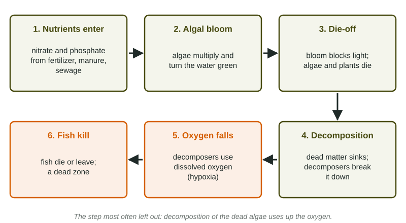

Nutrients are good for plants on land. In water, too many nutrients start a chain of events that ends with fish suffocating. This chain is one of the most tested ideas in the course, and readers give points only when every link is named.
The chain, link by link

- Nutrients enter the water. Nitrate and phosphate wash in from fertilizer on fields and lawns, manure from livestock, human sewage, and detergents with phosphate. Most of it is nonpoint runoff.
- An algal bloom forms. In fresh water, phosphorus is usually the limiting nutrient; in coastal water, often nitrogen. Adding the scarce nutrient lets algae multiply fast and turn the water green.
- Light is blocked and organisms die. The dense algae shade water plants below, which die. Algae themselves live only days to weeks.
- Decomposers go to work. Dead algae and plants sink. Bacteria and other decomposers break them down.
- Oxygen falls. Decomposers use dissolved oxygen as they respire. With so much to break down, they use it faster than it is replaced, especially in the deep water. This is hypoxia.
- Animals die or leave. Fish need roughly 5 mg of oxygen per liter; below about 2 mg per liter many animals die. Large hypoxic areas are dead zones.
Two traps. First, living algae make oxygen; the crash comes from decomposing the dead algae. Second, the cause is fertilizer (nutrients), not pesticides.
Oligotrophic and eutrophic water
| Oligotrophic | Eutrophic | |
|---|---|---|
| Nutrients | low | high |
| Algae | little | abundant, blooms |
| Clarity | clear, deep light | green, murky |
| Deep-water oxygen | high | low in summer |
Lakes become more eutrophic naturally over thousands of years as sediment and nutrients slowly build up. Human inputs speed this up to a few years or decades: cultural eutrophication.
Reading eutrophication data
A graph of a eutrophic lake through a summer usually shows two lines. Algae rise first, peak, and fall. Dissolved oxygen in the deep water stays fairly steady while the algae grow, then drops sharply just after the peak, when the bloom is dying and decomposing, and recovers only slowly. The timing is the evidence for the decomposition link. Comparing lakes, look for nutrients and algae rising together and water clarity falling as algae increase. Harmful algal blooms add a second danger: some kinds of algae release toxins that can close beaches and poison drinking water, as happened in Toledo, Ohio, in 2014.
Numbers you may be asked for
Worked example: how much runs off. A 200-hectare farm applies 150 kg of nitrogen per hectare, and 20% runs off. How much nitrogen reaches the stream?
Setup: . Answer: of nitrogen.
Preventing and reversing it
- Keep nutrients on the land: soil testing and fertilizer only as needed, buffer strips, cover crops, manure management.
- Restore wetlands, which take up nutrients before they reach open water.
- Add extra steps at wastewater plants that remove nitrogen and phosphorus (covered in 8.11); ban phosphate detergents.
- Aerating a lake raises oxygen but treats only the symptom.